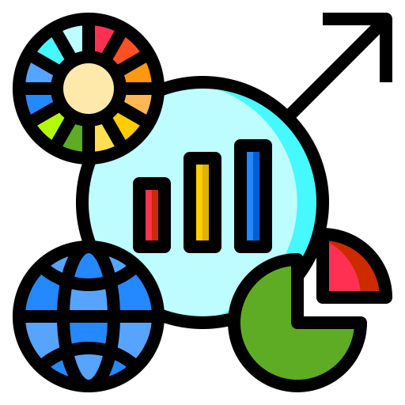

¿QUé hicimos?

Mapas
Aquí podrás consultar los mapas dinámicos de feminicidios, % de tweets misóginos, características socioeconómicas, además de la ubicación y sitios oficiales de los Institutos de la mujer.
Dashboard
En este apartado podrás revisar gráficos descriptivos y tablas con datos duros en las que podrás realizar filtros.
Análisis estadístico
En este apartado encontrarás el análisis de patrones puntuales y el de clústering utilizado para realizar un primer acercamiento a una regionalización considerando las características socioeconómicas y de violencia por entidad.
